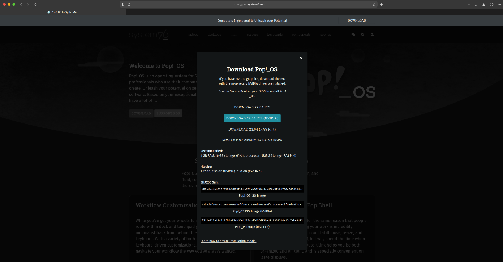
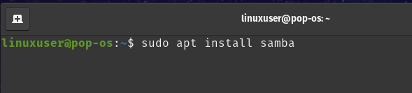
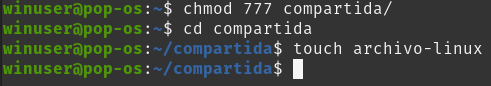

Contenidos
1. Descarga del archivo .iso
El primer paso para la instalacion de linux es la descarga del archivo .iso que sera utilizado para la instalacion del mismo en VirtualBox. En este paso a paso utilizaremos la distribucion de Linux Pop!_os. Para ello descargaremos el archivo del siguiente enlace. Y seleccionaremos la primera opcion.
2. Creacion y configuracion en VirtualBox
Despues de instalar VirtualBox y realizar su configuracion inicial, empezamos con la creacion de la maquina virtual. Tras abrir VirtualBox presionamos el boton "New".

Tras presionar el boton "New", se abrira una ventana para la configuraci on de esta, presionamos modo experto en la parte inferior. Aqui eligiremos el nombre de la maquina virtual, el archivo .iso, el nombre de usuario, el hardware que queremos que esta tenga y el espacio de disco duro que tendra la maquina virtual.

Como podemos observar se abre una ventana donde insertaremos el nombre de esta, puede ser cualquier nombre que el usuario quiera insertar, y eligiremos nuestro archivo .iso que descargamos anteriormente.

En el siguiente paso le asignaremos memoria RAM y una cantidad de CPUs a la maquina virtual. Le asignaremos 4GB de memoria RAM y 4 CPUs ya que estos son los requisitos minimos recomendables para este sistema.

Asignamos un espacio para el disco dura virtual de la maquina virtual. El minimo recomendado es 20GB.

Y por ultimo, asignamos al adaptador de red como red NAT, y seleccionamos el que se creo anteriormente.
3. Pop!_os
Una vez instalada y configurada, realizamos la configuracion del sistema por defecto tal y como
se indica en el siguiente enlace.
Al entrar al sistema, abrimos una terminal. Esta se puede abrir presionando en el icono de la terminal,
o presionando la tecla "Windows" y escribiendo "terminal" en el buscador que aparece.
Una vez en la terminal, nos aseguramos de que el sistema operativo este actualizado con los siguientes comandos:
sudo apt upgrade && sudo apt update

Escribimos "y" cuando nos pida confirmacion para instalar las actualizaciones.
4. Samba
Utilizaremos Samba para compartir archivos entre Linux y Windows. Para ello, instalamos Samba con el siguiente comando:
sudo apt install samba

Como todo programa que instalemos en Linux, nos pedira confirmacion para instalarlo. Simplemente escribimos "y" y se continuara la instalacion.
5. Creacion de su y nuevo usuario
La primera parte de este paso es darle una contrasena a "su" o "superusuario". Esta es la cuenta con permisos de administrador del sistema. Con este crearemos usuarios y podremos cambiar configuraciones del sistema. El comando que vamos a utilizar es el siguiente:
sudo passwd root
Despues de asignarle una contrasena a su, accederemos a este con la contrasena que hemos asignado antes, con el comando:
su
Una vez en este, creareos el nuevo usuario y lo llamaremos "winuser". Le asignaremos una contrasena cuando nos la pida y dejaremos en blanco el resto de informacion que nos pida, tan solo presionamos la tecla Enter para continuar hasta que el usuario se cree. El comando para crear un usuario es el siguiente:
adduser winuser
6. Creacion de directorio compartido
Despues de haber creado el nuevo usuario, cambiaremos a este con el comando:
su winuser
Una vez en este, vamos a crear la carpeta y entraremos en esta. Para ello necesitamos salir del directorio actual "/home/linuxuser", y nos dirigiremos a "/home/winuser". El primer comando que utilizaremos es el siguiente y sirve para salir del directorio actual:
cd ..
El siguiente que utilizaremos entrara en el directorio indicado:
cd winuser
Una vez entremos en el directorio "winuser" crearemos una carpeta llamada "compartida". El comando que vamos a utilizar es el sigueinte:
mkdir compartida
Tras crear esta carpeta, necistamos asignarle permisos para poder acceder a esta carpeta desde Windows. En Linux los permisos se asignan a traves de numeros. En este caso le asignamos todos los permisos a todos los usarios, el numero sera 777. Utilizamos el siguiente comando, con una "/" al final de la carpeta, ya que puede haber un archivo llamado "compartida" lo que puede causar problemas, para ello:
chmod 777 compartida/
Ya que estamos en el directorio "winuser", vamos a aprovechar y vamos a crear un archivo dentro de la carpeta "compartida". Lo llamaremos "archivo-linux" y los comandos que utilizaremos son:
cd compartida
touch archivo-linux

7. Configuracion de Samba
Samba es una implementacion de Windows SMB, lo utilizaremos para compartir el archivo que hemos creado con Windows. Para poder utilizar este, necesitamos anadir nuestra carpeta creada, junto con unos atributos que veremos siguientemente. Para hacer esto utilizaremos "nano" que es un editor de texto que viene incluido con Pop!_os. Utilizamos el siguiente comando para acceder a la cuenta administradora de Linux con la contrasena que creamos anteriormente:
su
Y una vez dentro de este, utilizamos:
nano /etc/samba/smb.conf
Una vez dentro del archivo, nos dirigimos al final de este con la rueda del raton o con la tecla de "Page Down". Introducimos lo siguiente:
[compartida]
- path = /home/winuser/compartida
- browseable = yes
- read only = no
- valid users = winuser
Guardamos este archivo con la combinacion de teclas "Ctrl + S" y salimos del archivo despues de haber guardado con la combinacion
"Ctrl + X".
Una vez guardada esta configuracion, tenemos que asignarle a Samba el usuario "winuser" y una contrasena, para ello:
smbpasswd -a winuser

Por ultimo debemos reiniciar el proceso de Samba para que se apliquen todas las configuraciones. Utilizamos el comando:
systemctl restart smbd.service
8. Direccion IP
El ultimo paso de este tutorial en Linux es recoger la direccion IP de esta maquina para, desde Windows, entrar a la carpeta compartida. El siguiente comando nos ensena toda la informacion de red de esta maquina virtual, la direccion que necesitamos es la subrayada que se puede ver en la siguiente imagen.
ip a